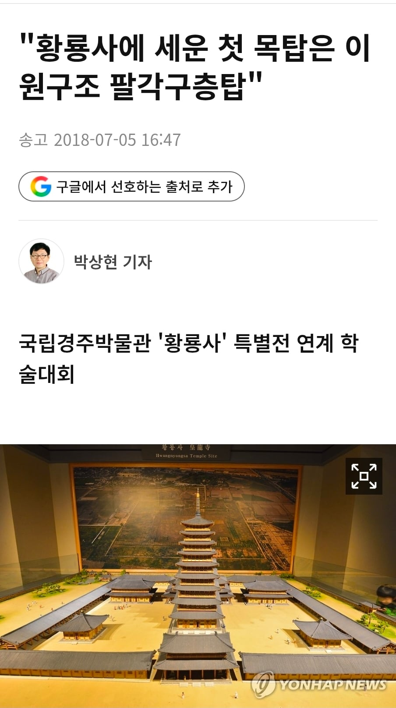
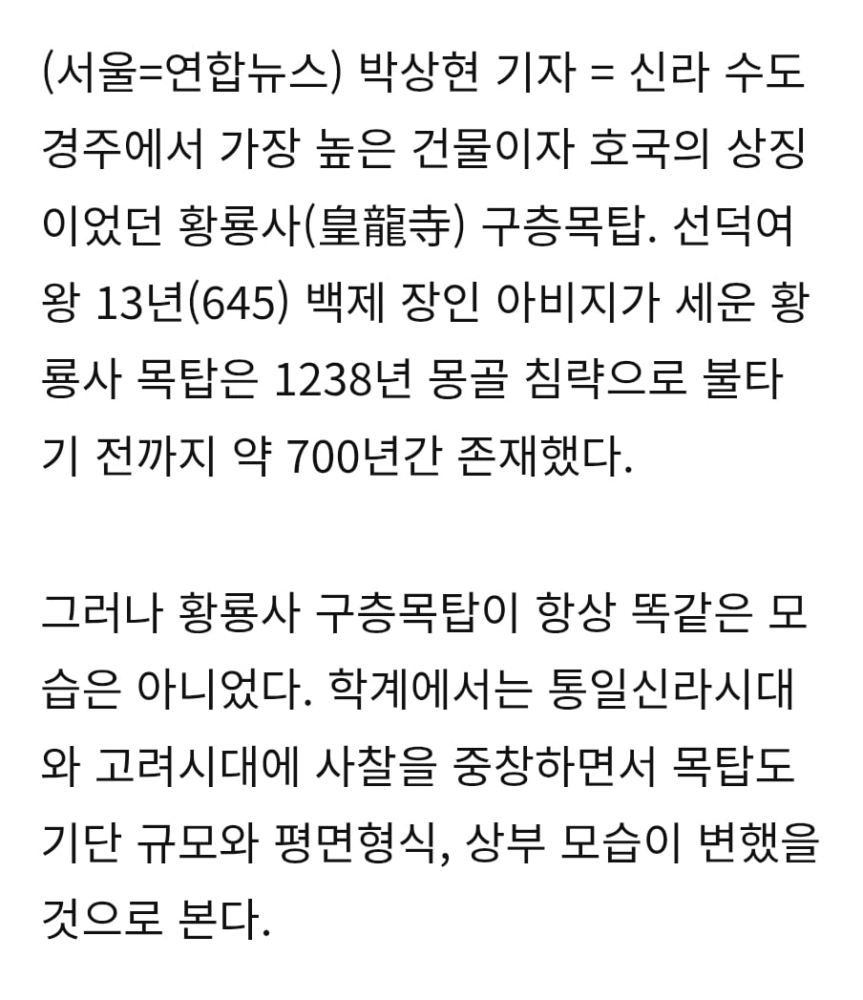

어떻게 복원해도 문제임


어떻게 복원해도 문제임
그 시대 맞게 복원하면 중국 일본식이라고 지랄남
사람들이 일본이 당나라 양식 변형이라 당연히 삼국이 먼저 채용하고 일본에 전한걸텐데 그걸 잘 몰라서
그 시대 양식 추정으로 만들면 이제와서
그건 왜색이 난다 하고 ㅈㄹ함 ㅋㅋ
그거랑 똑같은 이유로 전세계가 다 재미없지머
일본 어디가도 걍 천수각 왜색나는 기와목조에
유럽 어디가도 결국 비슷비슷해 보이는 성당에
미국은 가야 다양한가..?
조선식단청밖에안보임(침략당하고 불탄거 ㅈㄴ많음앙)
복원해도 정복하려던 그 민족들이 다 망하거나 흡수되거나 해서....4층 정도로 해서 북한, 일본, 중국, 러시아 이정도로 하면 될듯. 신 황룡사 4층 빌라, 이런거.
내친김에 미국, 나토, 핀란드, 로마까지 넣고 대환제국을 일으키죠
버전마다 하나씩 만들자
베스킨라빈스메타냐?
천잰데? 이거다
그냥 허공에 cg덧그려주는 시설 설치하고 양식별로 다른 이미지 띄워주자
변신기믹 넣자.
월정교 복원 논란때도 생각한거긴 한데 어차피 조상님들도 재건할때 옛 양식 그대로 복원하지 않고 당대 양식으로 새로 지었을건데 이제와서 꼭 그때랑 똑같이 복원할 필요가 있나 싶긴 함
골든 드래곤 나인원 한남 더 힐(주상복합)
실제로 '덕수궁더팰리스' 있기도하고
하는 김에 엘베도 달고
솔직히 그냥 멋있게 뽑으라고 누가 원본 기억이나하냐
역사갖고 장사하는새끼들 대부분이 미화 떡칠해서 팔아먹는다 대충 간지나게만해서 팔면장땡
어차피 야랄할꺼 그냥 준내 화려하게 빨리 짓고 오사카성 트리를 타자
그런 요물이라면 경주에 한 호텔이 이미 했음. 황룡사 목탑뷰로 사진 촬영가능
계절마다 변신시키는 걸로 한번 만들어보자
압도적인 간지에는 전통따윈 필요없다 그냥 개쩔고 멋지게 복원 ㄱㄱ
메카티라노 석탑이면 바로 순례가야제ㅋㅋ
대공방어 시스템이 탑재된 택티컬-메카 골든-티라노 9층 석탑으로
납세자, 유권자들이 왜색이라고 개지랄 떨어서 못 함
??????: 정부가 종교 편향적인 정책 쓴다
??????: 부처가 밥먹여주냐 부처도 인간이야
지금 만들고 100년 지나면 문화재임
층마다 다른 양식으로 짓자
복원하고 100년 존버해야지ㅋ
어디서 AR로 복원했다는거 본거같은데
제주가 반대한다!
우리나라 건축물 복원은 너무 엄근진 해졌어
당장 오래된 고건축물들 보면 복원 사업에서 해당 시대의 느낌이 계속 들어가서
연속적으로 변화하는걸 당연히 생각하며 복원하는데
우리는 원래와 같지 않으면 복원 왜함? 이라는 생각이 너무 강해
그냥 일본처럼 철근콘크리트에 엘리베이터까지 설치하고, 외부에 LED 쫙 박아놓는게 나음
원래 취지에 맞춰서 북한, 일본, 중국을 정복한 뒤 아시아의 주인임을 선포한후 모던하게 짓자
한국은 어딜가도 다 조선식 단청이라 보는재미는 없긴함